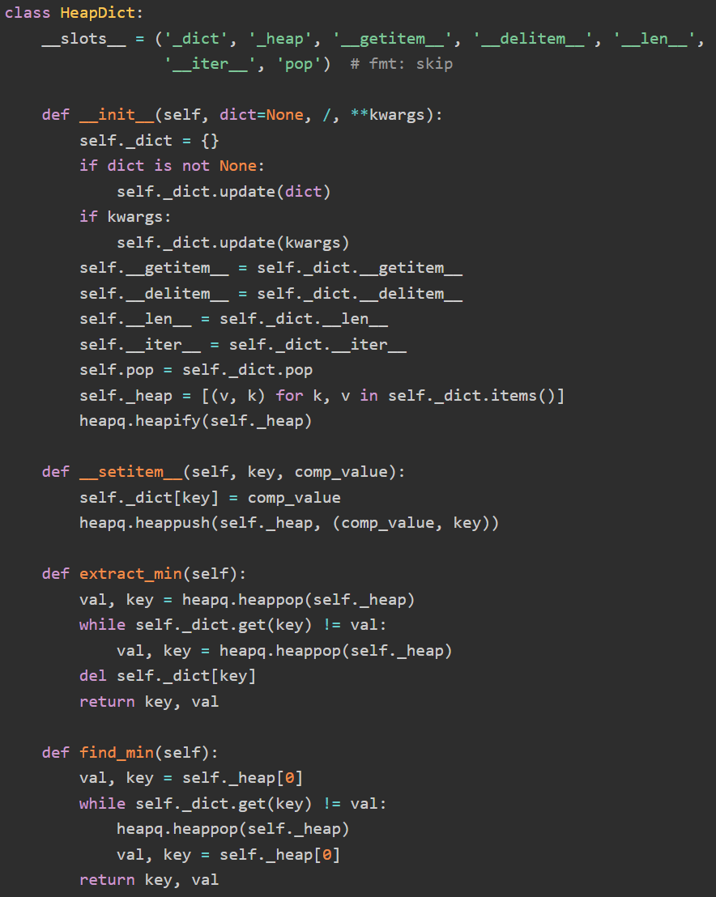
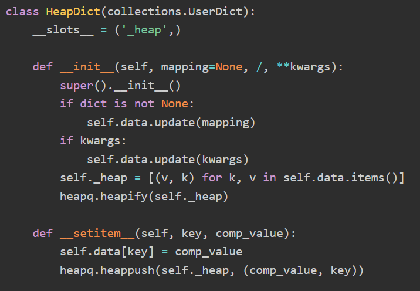
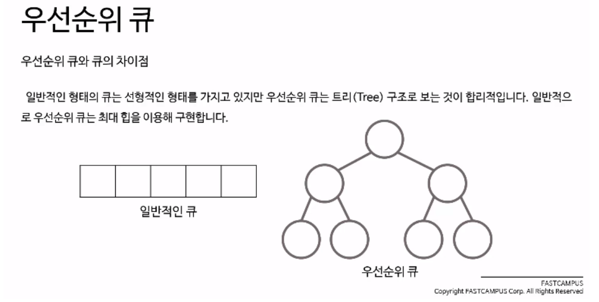
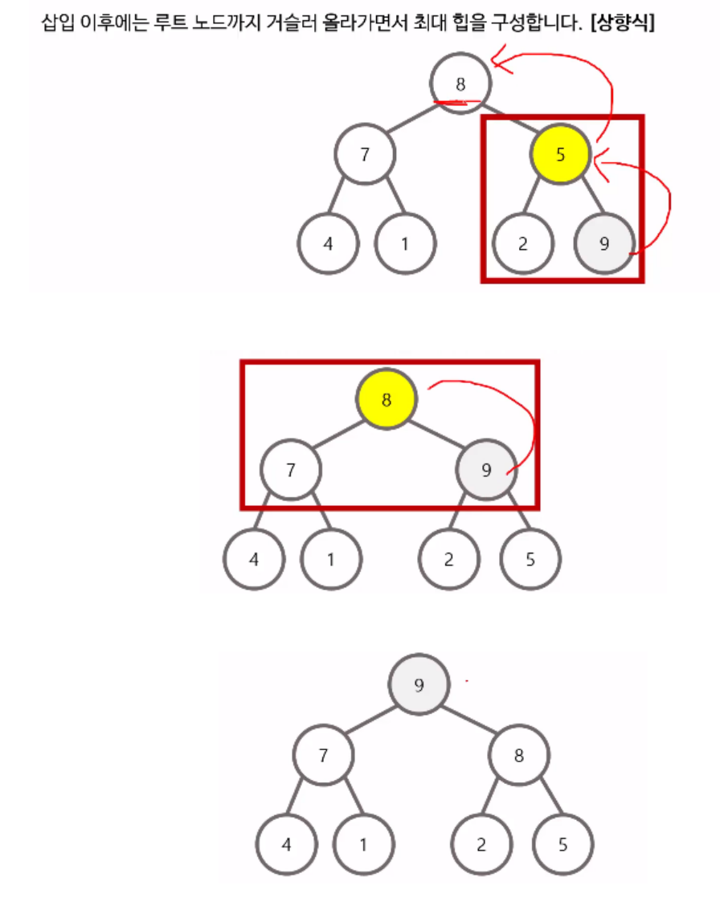

자료구조 : 우선순위 큐 (Priority Queue)
insert, find-min, extract-min을 빠르게 처리하는 자료 구조이다. 다양한 구현법이 존재하지만,
대표적인 것은 binary heap이다. 여러 언어의 기본 라이브러리에서 제공하는 것도 바이너리 힙이다.
위키 페이지에 보면 그 외에도, bimodal heap, pairing heap, 등등 여러 방법이 언급되고 있는데,
그나마 다른데에서 들어봤을 만한 것은 Fibonacci heap 정도이고, 나머지는 굳이 알 필요성을 못느꼈다.
기본적인 바이너리 힙은, insert와 extract-min을 O(logn)에 처리하고, heapify를 O(n)에 처리하는데,
사실 이것은 Order Statistic Tree로도 가능하다. 이쪽은 extract-min보다 훨씬 일반화된 extract-kth를 O(logn)에 처리 가능하다고 생각하면 된다.
그러나 그만큼 상수값이 커진다. 따라서 extract-min만 필요한 경우에는 heap을 쓰는 것이 맞다.
Python에서는 우선순위큐가 heapq 모듈에 구현되어있다
min-heap으로만 구현되어 있다. 커스텀 비교함수나 키를 지원하지 않기 때문에,
max-heap 으로 사용하거나 다른 비교기준을 사용하려면 다른 방법을 사용해야 한다.
(bisect 모듈도 마찬가지 ⇒ 파이썬 3.10부터 bisect모듈도 key를 지원한다.).
데이터가 정수나 실수이고, max-heap으로 쓸때에는, 그냥 -1을 곱한 값을 heapq에 넣는것으로 처리하자.
(예: 최대 힙)
사실 맥스힙의 경우에는 heapq._heappop_max, heapq._heapify_max 라는 흑마술이 있기는 하다..
맥스힙 연산을 구현해놓은 함수인데, 목적이 퍼블릭하게 사용하게 만든게 아니라, 가른 함수 구현을 위해서 만들어 놓은 것이라서 함수명 앞에 _가 붙어있고,
heappush_max는 존재하지 않는다. 그래도 heappify와. pop만 쓰려면 쓸수는 있고, push만 구현하는것이 어렵지도 않긴 하지만..
흑마술 같은 느낌이라서 쓰는게 조금 우려되기는 한다;
아래에는 우선순위큐를 사용한 몇가지 테크닉을 설명할건데, 이것들은 속도가 좀 느리기는 하지만 Order Statistic Tree로도 모두 가능하긴 하다.
cpp라면 multiset을 그냥 쓰면 되니까 따로 코딩면에서 더 편할수도 있다. 다만 python에서는 어차피 Order Statistic Tree도 따로 구현해주어야 한다.
이 내용은 공통적으로 적용되는 내용이라 아래에서 다시 언급하지 않겠다.
임의 원소 삭제를 지원하는 힙
라이브러리에서 제공되는 binary힙은 임의 원소의 삭제나 수정 기능이 없다.
하지만 이러한 연산이 필요한 경우가 종종 있다.
사실 삭제만 제공되면 수정은 {수정 전의 값 삭제} + {수정 후의 값 삽입}으로 자연스럽게 지원된다.
그냥 이러한 기능을 지원하는 힙을 새로 구현하는 방법도 있다. 구현이 그렇게 어려운 것도 아니지만 좀 귀찮다.
보다 쉬운 방법은, 실제로 원소를 삭제하는 대신 원소에 마크만 해두고, 마크해둔 원소가 탑에 올라오면 그때 삭제를 하는 것이다.
새로 힙을 구현할 필요 없이 라이브러리에 이미 구현되어있는 힙을 사용할수 있다.
Python heapq 모듈 공식 문서 에서도 이 방식을 소개한다
마크를 하는 데에는 몇가지 구현 방법이 있다. 위의 파이썬 공식문서에서는 힙에 들어가는 노드에 값과 마크를 같이 저장하고,
값을 노드로 매핑하는 딕셔너리를 따로 유지해서, 노드에 바로 마크를 수정하는 방법을 설명한다.
그러나 이 방법은 메모리 측면이나 속도 측면 모두에서 덜 효과적이다.
그것보다는 지워진 원소들을 다른 곳에 따로 저장해서 갖고 있는 방법이 있다.
내가 단순하게 생각했던 방법은 그냥 지워진 원소를 저장하는 셋을 만들어두고, 셋에 포함되어 있는 값이 힙의 top에 올라오면,
그 값을 heap과 셋에서 둘다 지우는 방법이었다. 그러나 이경우에 중복된 값이 여러개 있을수도 있으니까,
그경우까지 해결하려면 셋 대신 카운터를 쓰는 것으로 방법을 수정해야 했다.
인터넷에서 찾은 다른 방법은 지워진 원소들을 또다른 힙에 저장하는 것이다.
원래 힙의 top과 지워진 원소를 저장하는 힙의 top가 동일하면 양쪽에서 모두 pop을 해주는 것.
지워진 원소들을 힙에 저장하느냐 dict(=카운터)에 저장하느냐의 차이인데,
시간복잡도만으로는 dict가 더 빠르지만 이중 우선순위 큐 의 제출 결과로는 heap쪽이 더 빨랐다. 만약 중복 원소가 없어서 set을 그냥 쓸수 있다거나,
원소들이 아예 그냥 index들이라서 불리언 어레이에 저장할수 있다면 속도가 바뀔지는 잘 모르겠지만, 그냥 다른 heap에 저장하는 이 방법으로 구현했다.
아이템이 hashable하지 않아도 사용가능하다는 장점도 있다
key값으로 액세스되고, value순으로 정렬되는 힙
딕셔너리처럼 key, value 구조로 저장하되, value가 가장 작은 아이템을 빠르게 억세스하고 싶은 경우가 종종 있다.
이것을 구현하는데 새로운 알고리즘이 적용되지는 않는다. 아이템들을 딕셔너리와 위에서 설명한 '임의 원소 삭제를 지원하는 힙' 에 동시에 저장해서 관리하면 충분하다.
그래서 여기에서는 알고리즘이 아닌 구현 방법에 관해서만 설명한다
앞에서는 '임의 원소 삭제를 지원하는 힙'을 구현할때, 삭제할 원소들을 다른 곳에 저장해둔 뒤에,
힙의 원소가 삭제저장소에 포함되어 있으면 삭제된것으로 처리하는 방식을 썼다. 여기에서는,
현재 힙에 원소가 힙에 저장된 값과 dict에 저장된 값이 다르면 삭제된 것으로 처리하는
방식으로 구현하면 된다.
힙과 딕셔너리를 동시에 관리하는 코드를 매번 작성하기는 번거러우므로 라이브러리로 따로 만들기로 했다.
기본적으로는 dict의 인터페이스를 따르지만, 추가로 extract_min 과 find_min 함수만 지원하는 형태로 만들기로 했다.
클래스 이름은 HeapDict로 정했다
힙에 원소를 삽입하는 것도 heap[k] = v 로, 삭제할때는 del heap[k] 로 동작하게 된다.
Python에서 dict 형태의 인터페이스를 갖는 클래스를 작성하는 방법은 크게 세가지이다.
1) dict를 상속, 2)collections.UserDict를 상속, 3)dict를 멤버로 갖는 클래스를 만들기. 이중에서 1번은 어울리지 않고.. 2번과 3번 중에서 골라야 했다.
실제로 구현해보면 추가시킬 메소드 외에, overriding이 필요한 기존 함수는 놀랍게도 __setitem__ 뿐이다.
먼저 dict를 멤버로 갖도록 클래스를 만들면 이런식이 된다.




코드가 훨씬 더 간단해지는 것과 별개로, 속도면에서 느려지지 않을까 걱정했는데,
속도면에서도 이 방식이 살짝 더 빨랐다.
그래서 이 방식으로된 구현체를 사용하기로 결정했다
__init__ 함수에서 주의할점은, super().__init__()에 mapping과 kwargs를
넘겨서 초기화하면 안된다는 것이다. UserDict를 상속한 클래스에서는 init에서 아이템을 추가할때도,
setitem에 구현된 방식으로 추가하게 된다. 그렇게 되면,
힙에 원소를 하나하나 넣는 방식으로 작동하게 되므로,
한번에 전부 넣고 heapify를 하는 것보다 느리게 된다.
그래서 지금과 같은 방식으로 구현해줘야 한다.
Double-ended priority queue
extract-min 과 extract-max를 동시에 지원하는 우선순위큐이다. Double-ended priority queue 참조
가장 효율적인 것은 Min-max heap을 구현해서 사용하는 것이라고 생각되지만, 그러면 라이브러리에 제공되는 힙을 사용하지 못하고 전부 처음부터 짜야 한다.
대신 Double-ended priority queue에서 소개된 방법들처럼 일반적인 PQ를 잘 조합해서 양방향 PQ로 사용하는 것도 가능하다.
그중에서도 가장 간단하게 구현할 수 있는 방법은 삭제가 지원되는 힙을,
max heap과 min heap으로 두개를 만들어 놓고서,
원소를 삽입할때에는 두 힙에 모두 삽입하고,
최댓값을 추출하고 싶으면 max heap에서 최댓값을 추출한 뒤 min heap에서는 그 값을 삭제,
최솟값을 추출할때는 그 반대로 작업하는 방법이 있다.
Running Median
원소가 계속 삽입 삭제될때, 중앙값을 빠르게 업데이트하는 방법.
바꿔 말하면 중간값 우선순위큐를 구현하는 방법이다.
참고
min heap과 max heap 두개의 힙을 만들어서 max heap의 원소들은 모두 min heap의 원소들보다 작고, 두 힙의 원소의 갯수 차이가 1이라가 되도록 유지하면, max heap의 top이 항상 median으로 유지된다는 내용이다.
이 기법을 조금 더 변형하면 고정된 k에 대해서 k-th 원소를 추출할수 있는 힙을 만들수도 있겠다.
관련 문제
가운데를 말해요 : 삽입만 필요한 중앙값힙
중앙값 : 삽입과 삭제가 필요한 중앙값힙
가장 큰 수 k개 찾기
리스트에서 가장 큰 수 k개를 찾는 작업을 우선순위큐를 사용해서 효율적으로 수행하는 방법이다.
1. 정렬 방법
그냥 전체를 정렬하고 앞에서부터 k개를 끊으면 정렬에 O(nlogn)이 걸리고, k개의 원소를 찾는데에 O(k). 총 O(nlogn)
2. 최대힙
전체를 최대힙에 넣고 k번의 pop을 처리하면, 힙을 만드는데에 O(n) + k번의 pop에 O(klogn). 총 O(n+klogn)
3. 최소힙
최대힙을 쓰는것이 직관적으로 바로 떠오르는 방식이라면, 이것은 떠올리기에는 조금 더 어려운 방식이다.
처음 k개의 원소만을 갖고 최소힙을 만든다. 그 다음에, 남은 n-k개의 원소들에 대해서 힙에 추가하고, 힙에서 가장 작은 원소를 꺼내는 것을 반복한다. 마지막까지 힙에 남은 k개의 원소가 가장 큰 k개의 수이다. 순서대로 pop하면 순서에 맞춰서 꺼낼 수 있다. 처음 힙을 만드는 데에 O(k) + 나머지 n-k개의 원소를 처리하는데에 O((n-k)*logk). 마지막에 힙에 남은 원소를 꺼내는 것은 O(klogk). 총 O(nlogk)
기본적으로는 최대힙을 쓰는 방법보다 느리지만, n이 엄청 클 경우에 O(n)이 아닌 O(k)의 공간복잡도로 해결할 수 있다는 장점이 있다.
관련 문제: N번째 큰 수